\(\renewcommand\AA{\mathring{A}}\)
MSlice Testing#
Introduction#
MSlice is a tool for visualizing cuts and slices of inelastic neutron scattering data. This version uses Mantid to process the data and plots it using matplotlib. It includes both a GUI and a commandline interface with a script generator.
See here for the current MSlice documentation: http://mantidproject.github.io/mslice
Set Up#
Ensure you have the ISIS Sample Data available on your machine.
If you are using a conda install of Mantid Workbench, make sure to install MSlice by running
mamba install -c mantid msliceinside your conda enviroment and restart the Mantid Workbench.If you are using a standalone install of Mantid Workbench, MSlice should already be available within it.
Open
Interfaces>Direct>MSliceGo to the
Data Loadingtab and selectMAR21335_Ei60meV.nxsfrom the sample data.Click
Load DataThis should open the
Workspace Managertab with a workspace calledMAR21335_Ei60meV
Default Settings#
In the
Optionsmenu, changeDefault Energy UnitsfrommeVtocm-1andCut algorithm defaultfromRebin (Averages Counts)toIntegration (Sum Counts).The
ensetting on theSlicetab changes frommeVtocm-1and the values in the row labelledychange. Please note that theSliceandCuttabs are not enabled before at least one data set has been loaded.Navigate to the
CuttabVerify that
enis set tocm-1andCut AlgorithmtoIntegration (Sum Counts)Change both settings back to their original values,
Default Energy UnitstomeVandCut algorithm defaulttoRebin (Averages Counts).
Taking Slices#
1. Plotting a Slice#
In the
Workspace Managertab select the workspaceMAR21335_Ei60meVClick
Displayin theSlicetab without changing the default valuesOn the slice plot, click
Keep
{kind=link}
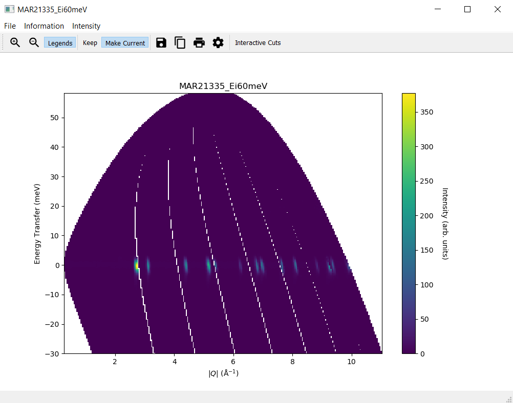
2. Modifying a Slice#
Modify the slice settings in the
Slicetab, for instance the values for x forfromto1.5andtoto5.5, and clickDisplayA second slice plot should open with a plot reflecting your changes in the settings
The original slice plot should remain unchanged
{kind=link}
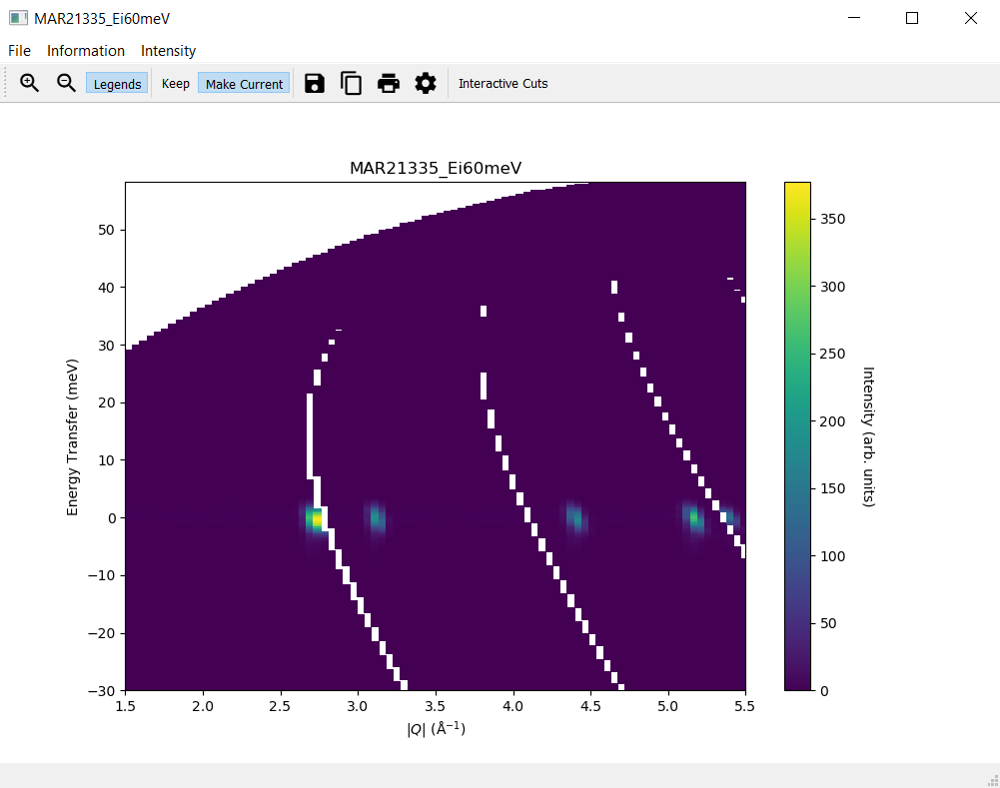
3. The Plots Tab#
Navigate to the
Plotstab of MSlice and check that there are entries for two plotsOpen the
Plotstab of Mantid and check that there are no entries for plotsSelect one of the plots in the
Plotstab of MSlice and click onHide, the corresponding plot should disappearNow click on
Showfor this plot and it should re-appear againDouble-click on elements of the original slice plot and modify settings, for instance the plot itself and the colorbar axes
Change the plot title and the y axis label to LaTeX, for instance
$\mathrm{\AA}^{-1}$, and ensure the text is displayed correctly (for$\mathrm{\AA}^{-1}$it should be \(\mathrm{\AA}^{-1}\))Ensure that the slice plot changes accordingly
Click
Make Currenton the original slice plotModify the slice settings in the
Slicetab again and clickDisplayThis time the new slice plot overwrites the original slice plot
4. Overplot Recoil Lines and Bragg Peaks#
Navigate to the
Informationmenu on the slice plotSelect
Hydrogenfrom the submenu forRecoil lines. A blue line should appear on the slice plot.Select two or three materials from the submenu for
Bragg peaksand ensure that Bragg peaks in different colours per material are plotted on the slice plot.Make sure that when deselecting one of the materials only the respective Bragg peaks are removed from the slice plot but the ones still selected remain.
{kind=link}
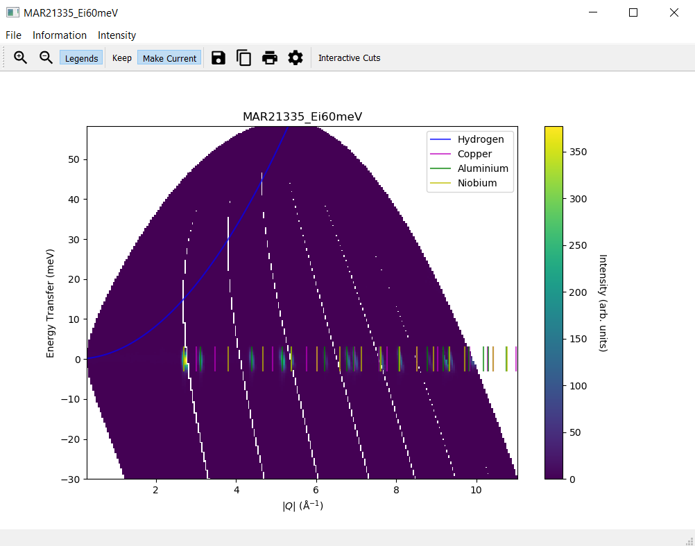
5. Generate a Script#
Navigate to the
Filemenu on the slice plotSelect
Generate Script to Clipboardand paste the script into the Mantid editor. Please note that on LinuxCtrl + Vmight not work as expected. Useshift insertinstead in this case.Run the script and check that the same slice plot is displayed
Taking Cuts#
1. Plotting a Cut#
In the
Workspace Managertab select the workspaceMAR21335_Ei60meVNavigate to the
CuttabIn the row labelled
along, set thefromvalue to0and thetovalue to10In the row labelled
over, set thefromvalue to-5and thetovalue to5Click
Plot. A new window with a cut plot should open.
{kind=link}
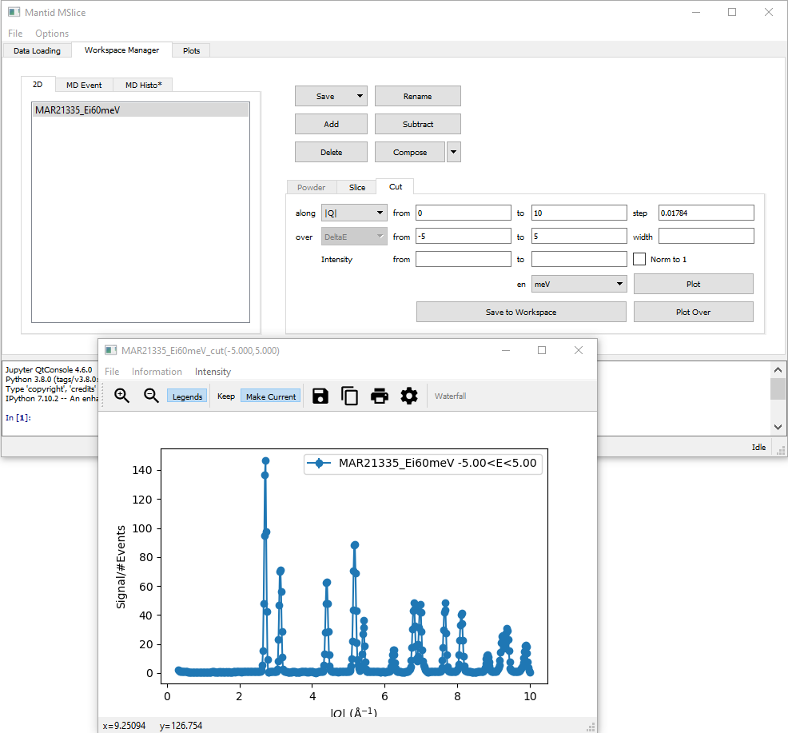
2. Changing the intensity of a Cut#
Navigate to the
Intensitymenu on the cut plotSelect
Chi''(Q,E)and set a value of100The y axis of the cut plot should change to a higher maximal value
{kind=link}
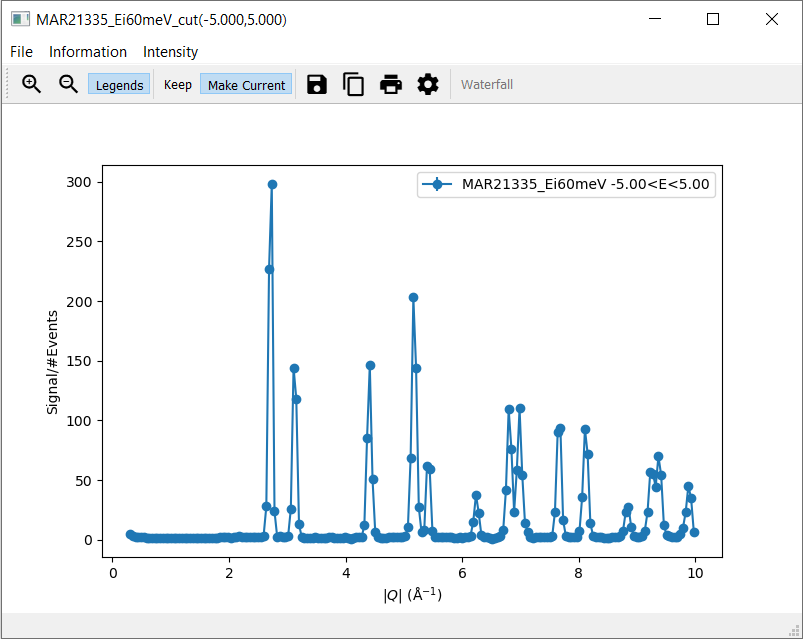
3. Modifying a Cut#
Check that the menu item
Recoil linesis disabled within the menu itemInformation.Modify the step size on the
Cuttab to0.02and clickPlot Over. A second cut should appear on the cut plot in a different colour.Click on Plot Options on the cut plot and modify settings
Ensure that the cut plot changes accordingly
Click on Save to Workbench on the
Cuttab and check that in Mantid a workspace with the nameMAR21335_Ei60meV_cut(-5.000,5.000)appears. In case there are several cuts with the same parameter, these workspaces are differentiated by appending an index, so there might be a workspace namedMAR21335_Ei60meV_cut(-5.000,5.000)_(2)instead.In the row labelled
over, set thefromvalue to-1and thetovalue to1and clickPlotNavigate to the tab
MD Histotab and check that there are at least two entries,MAR21335_Ei60meV_cut(-5.000,5.000)andMAR21335_Ei60meV_cut(-1.000,1.000). Please note that there might be more entries from the previous tests.Select
MAR21335_Ei60meV_cut(-1.000,1.000)and clickSave to WorkbenchCheck that in Mantid a workspace with the name
MAR21335_Ei60meV_cut(-1.000,1.000)appearsNavigate to the
CuttabIn the row labelled
along, selectDeltaEIn the row labelled
over, select2ThetaIn the row labelled
along, set thefromvalue to-5and thetovalue to5In the row labelled
over, set thefromvalue to30and thetovalue to60Click
PlotDepending on the cutting algorithm, the plot will look similar to the plot below when using the integration method
{kind=link}
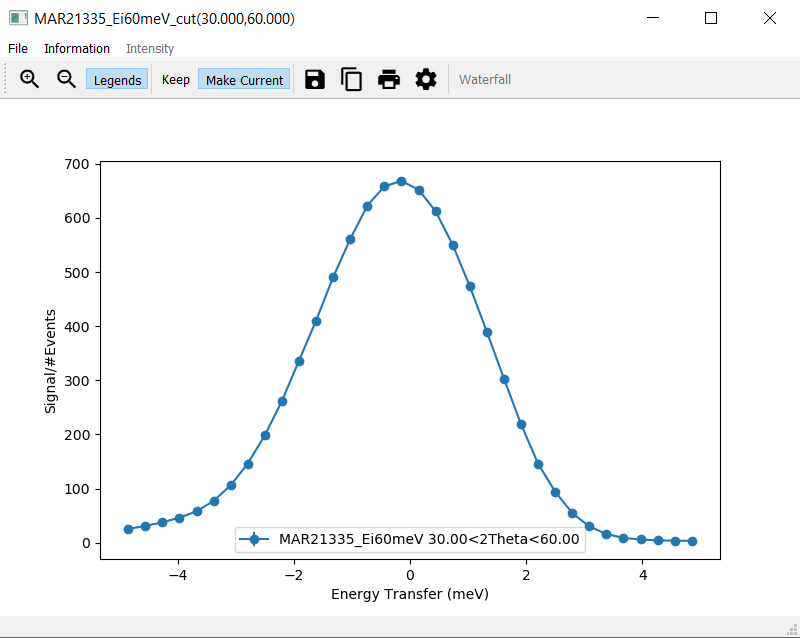
and similar to the plot below when using the rebin method.
{kind=link}
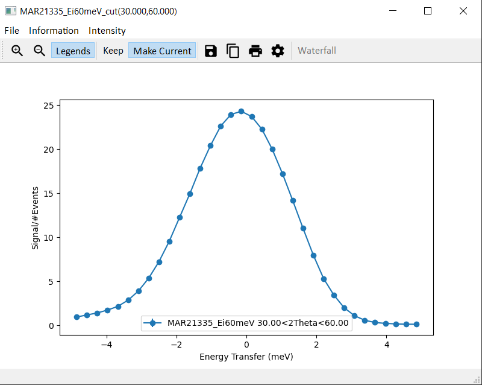
4. Interactive Cuts#
Navigate to the
Slicetab of theWorkspace ManagertabClick
Displayin theSlicetab without changing the default valuesOn the slice plot, select
Interactive CutsUse the cursor to select a rectangular region in the slice plot. A second window with a cut plot should open.
Check that the menu item
Intensityis disabled as well as the itemRecoil lineswithin the menu itemInformationin the new plot windowCheck that the
Filemenu only has one menu item,CloseChange the rectangle by changing its size or dragging it to a different area of the slice plot. The cut plot should update accordingly.
Click on
Save Cut to Workspaceand check theMD Histotab of the Workspace Manager to verify that the new workspace was addedClick on Flip Integration Axis. The x axis label changes from
Energy Transfer (meV)to \(|Q| (\mathrm{\AA}^{-1})\) or vice versa, depending on the initial label.
{kind=link}
{kind=link}
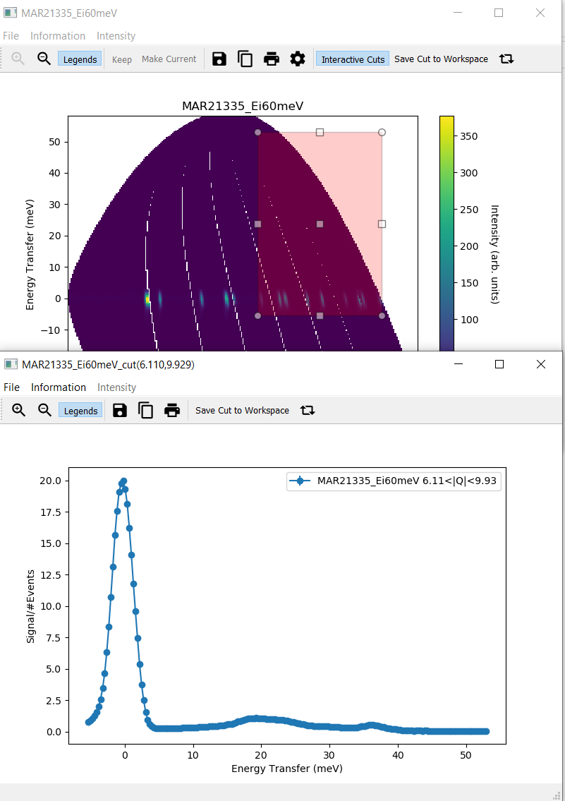
5. Overplot Bragg Peaks#
Navigate to the
Informationmenu on the cut plotSelect
Aluminiumfrom the submenu forBragg peaks. Green lines should appear on the cut plot with a respective legend entry.Deselect
Aluminiumform the submenu forBragg peaks. Both green lines and the respective legend entry should disappear.
{kind=link}
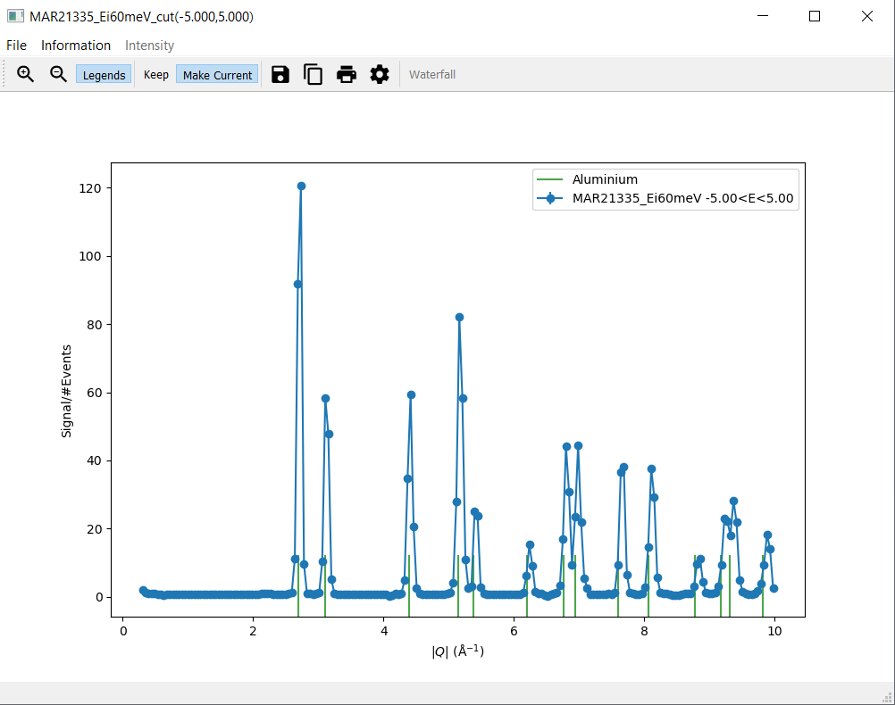
6. Generate a Script#
Navigate to the
CuttabIn the row labelled
along, select|Q|and set thefromvalue to0and thetovalue to10In the row labelled
over, set thefromvalue to-5and thetovalue to5Click
Plot. A new window with a cut plot should open.Navigate to the
Informationmenu on the cut plotSelect
Aluminiumfrom the submenu forBragg peaks. Green lines should appear on the cut plot with a respective legend entry.Navigate to the
Filemenu on a cut plot. Please note that this needs to be a cut plot created via theCuttab and not an interactive cut.Select
Generate Script to Clipboardand paste the script into the Mantid editor. Please note that on LinuxCtrl + Vmight not work as expected. Useshift insertinstead in this case.Run the script and check that the same cut plot is displayed
The Command Line Interface#
1. Use the Mantid Editor#
Close all plots currently open but not the MSlice interface
Copy the following code into the Mantid editor. You might have to modify the file path for the Load command to the correct location of
MAR21335_Ei60meV.nxs.
import mslice.cli as mc
ws = mc.Load('C:\\MAR21335_Ei60meV.nxs')
wsq = mc.Cut(ws, '|Q|', 'DeltaE, -1, 1')
mc.PlotCut(wsq)
ws2d = mc.Slice(ws, '|Q|, 0, 10, 0.01', 'DeltaE, -5, 55, 0.5')
mc.PlotSlice(ws2d)
2. Run an Example Script#
Run the script.
There should be two new windows with a slice plot and a cut plot
{kind=link}
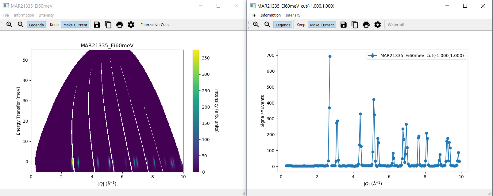
3. Use the Jupyter QtConsole#
Repeat the same test by copying the script into the Jupyter QtConsole of the MSlice interface
{kind=link}
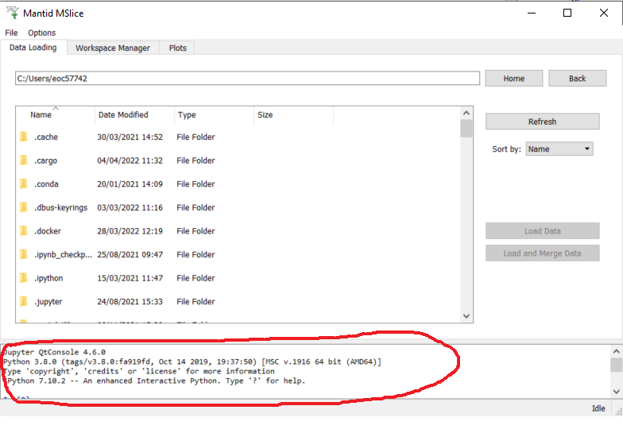
4. Run Another Example Script in the Mantid Editor#
Select the
MAR21335_Ei60meVworkspace in theWorkspace Manager, clickComposeand thenScaleEnter a scale factor of 1.0 and click
OkSelect the
MAR21335_Ei60meVworkspace again and clickSubtractSelect the
MAR21335_Ei60meV_scaledworkspace and leave the self-shielding factor as 1.0, then clickOkSelect the
MAR21335_Ei60meV_subtractedworkspace and clickDisplayin theSlicetabVerify that all values are zeros
Navigate to the
Filemenu on the slice plot, selectGenerate Script to Clipboardand paste the script into the Mantid editorClose the slice plot with all zeros
Run the script in the Mantid editor and verify that a slice plot with all zeros is reproduced